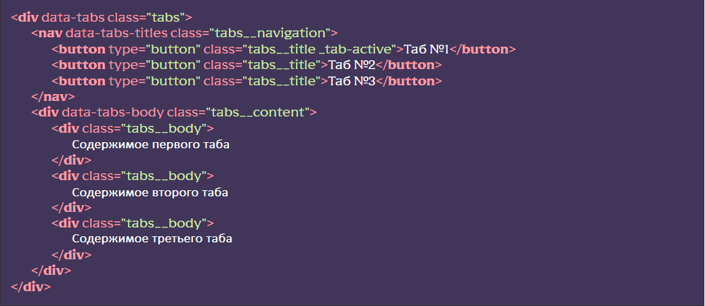

Основные возможности
- Использование множества блоков с табами
- Открытие нужного таба по хешу
- Превращение табов в спойлеры на указанной ширине экрана (удобно для адаптива)
- Возможность анимированного открытия табов
- Семантика
Подключение функционала
[HTML] В нужном месте вызвать сниппет tabs (классы можно заменить на нужные). Либо вручную создать структуру с соответствующими дата-атрибутами. Обратите внимание, что добавление класса _tab-active, для заголовка таба сделает таб активным (открытым)
Пример блока с тремя табами: 
[JS] В файле js/app.js раскомментировать строку
flsFunctions.tabs();
[SCSS] (не обязательно) Если вы хотите сразу посмотреть на
работу табов и оставили классы предложенные сниппетом, вы можете раскомментировать строку @import
“base/tabs”; В файле src/scss/base.scss это подключит базовые стили, их можно
отредактировать под свои нужды.
Использование функционала
Превращение табов в спойлеры
Для того, чтобы табы превращались в спойлеры, необходимо для элемента с атрибутом data-tabs указать значение ширины экрана ниже которой произойдет превращение:

В момент превращения, к объекту с атрибутом data-tabs добавится класс _tab-spoller, по которому можно изменить стили для нового представления табов-спойлеров.
Открытие нужного таба по хешу
Если есть необходимость открывать конкретный таб в конкретном блоке табов при открытии страницы по хешу, необходимо, для элемента с атрибутом data-tabs добавить атрибут data-tabs-hash:

Теперь, при клике на заголовки табов, к адресу страницы будет добавляться хеш вида: #tab-0-1, где 0 — это идентификатор блока с табами, а 1 - идентификатор таба в этом блоке.
Соответсвенно, перейдя на страницу с хешем #tab-0-1 откроется второй таб в первом блоке с табами. При #tab-2-0 откроется первый таб в третьем блоке с табами и т.д.
Анимация при открытии таба
Для того, чтобы табы открывались плавно, необходимо объекту с атрибутом data-tabs, добавить атрибут data-tabs-animate, а в качестве значения указать количество миллисекунд за которые откроется таб (по умолчанию 500).

Расположение и дополнительные данные
Функционал находится в js/files/functions.js. Название функции tabs()